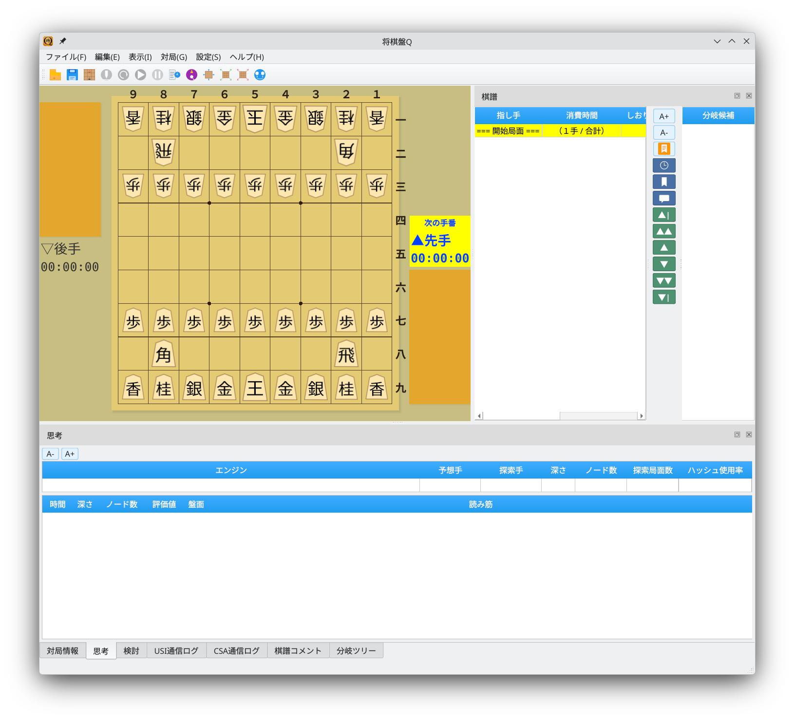
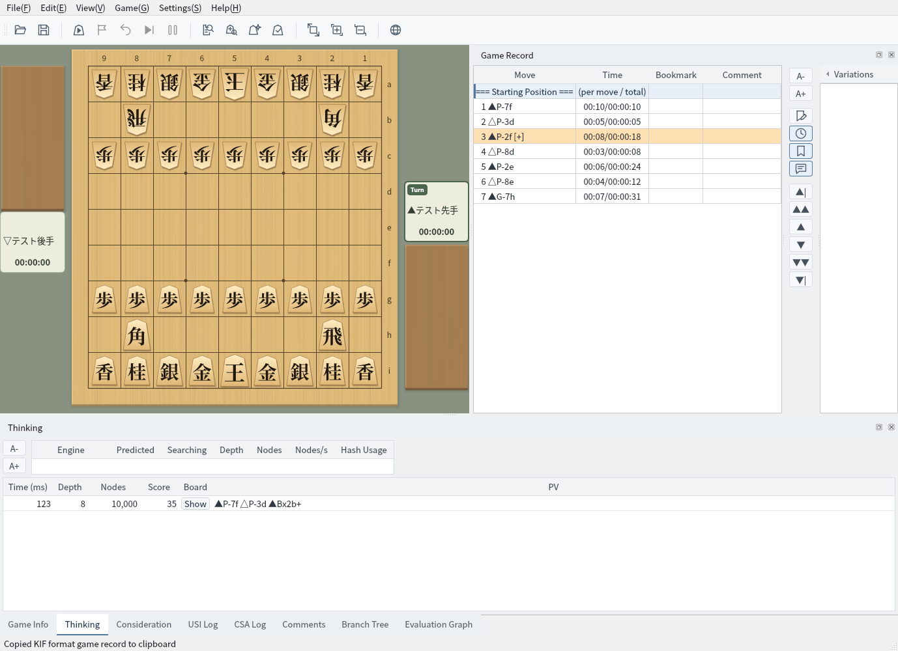

日本語・英語・中国語（簡体字／繁体字）のUIに対応し、言語設定で切り替え可能
メニュー・ボタン・タブなどすべてのUI要素が日本語で表示されます
日本語UIでは、メニューバー・棋譜欄・エンジン情報タブ・対局情報など、すべてのUI要素が日本語で表示されます。

日本語UI：メニュー・タブ・棋譜欄などすべて日本語で表示
メニューや既知の対局情報項目は英語、指し手は英語表記で表示されます
英語UIでは、メニューバー（File, Edit, View, Game, Settings, Help）やタブ名（Game Info, Thinking, Consideration, Branch Tree など）がすべて英語で表示されます。

英語UI：読み筋・棋譜欄に英語表記、盤の段にa〜iを使用
設定メニューから簡単に言語を切り替えられます
メニューの「設定」→「言語設定」から言語を選択します。英語UIの場合は「Settings」→「Language」から選択します。
言語を選択すると、アプリケーションの再起動後に新しい言語が反映されます。メニュー・ダイアログ・タブ名・ボタンなど、すべてのUI要素が選択した言語で表示されます。
「設定」→「棋譜と盤の座標表記」で、画面の言語とは別に指し手の表記を選べます。変更は再起動後に反映されます。
対局者名・棋戦名・コメント・未知のタグは翻訳せず、原文を表示します。対局情報の既知の項目名や手合割は表示だけを翻訳し、編集時には元の文字列を扱います。
言語や表記を変更しても棋譜データは変わりません。保存や棋譜のコピーには従来どおりKIF・KI2・CSA・JKF・USI・USENの各形式を使い、KIF・KI2の指し手は日本語で出力します。英語表記専用の保存形式は追加していません。